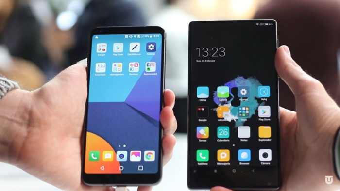
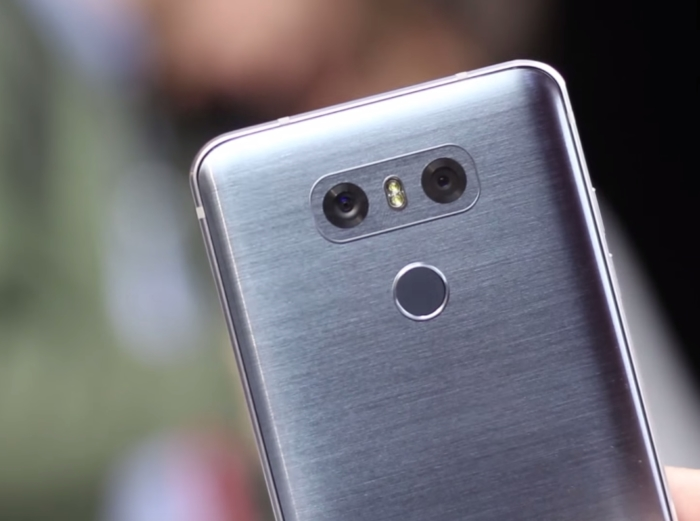

3 motivos para comprar el nuevo LG G6
Dos meses más tarde desde su presentación en el MWC 2017, el LG G6 por fin comenzará su comercialización
esta misma semana de forma global.
Así
lo ha confirmado LG en su blog oficial de noticias, señalando que,
tal ha sido la demanda de su nuevo terminal, que se han visto obligados a anticipar su llegada a la mayor parte de mercados.
Y es que el LG G6 es, sin duda, uno de los mejores terminales creados por LG en su historia, que algunos, incluso,
comparan con el grandioso LG G2. Por este motivo, hoy queremos darte 3 motivos por los que merece la pena comprar el LG G6.
Una pantalla espectacular
La principal apuesta de LG con su nuevo buque insignia reside, sin duda, en su pantalla. A priori, su panel de 5,7 pulgadas QuadHD IPS
puede parecer “normal”, pero en cuanto nos paramos a ver los detalles que esconde, es cuando nos damos cuenta que, realmente, estamos ante
una de las mejores pantallas incluidas en un smartphone.
La principal premisa de su pantalla es el formato FullVision
Pero la cosa no acaba ahí, ni mucho menos. Para aprovechar el enorme panel del LG G6, la surcoreana ha trabajado mano a mano con Dolby para
introducir la tecnología Dolby Vision en la pantalla del terminal. De esta forma, seremos capaces de reproducir
contenido HDR10, en cuanto las principales plataformas comiencen a
soportar el sistema incluido en el terminal.
Un diseño a la altura de los mejores
Uno de los aspectos más criticados del anterior LG G5, ha pasado a ser una de las principales bazas del LG G6. El diseño del nuevo terminal
surcoreano está muy por encima de las anteriores generaciones de la línea “G”, con un cuerpo acabado en aluminio y cristal, una forma algo más
cuadrada y tres colores muy elegantes entre los que elegir: negro, gris y blanco.
Además, su parte frontal ha sufrido un importante lavado de cara en forma de reducción de marcos de pantalla, lo cual nos deja con un terminal
cuyo panel asciende a las 5,7 pulgadas, en un cuerpo similar al de un smartphone con pantalla de 5,2 pulgadas.
Una cámara más que completa
El terreno de la telefonía, y más concretamente de la gama alta, ha llegado a un punto en el que los fabricantes lo tienen muy difícil para
diferenciarsedel resto en el ámbito fotográfico.
Así pues, LG, que no anda corta de ideas, ha decidido introducir una
doble cámara trasera muy capaz, según las primeras pruebas, con varios modos a
herramientas que permiten sacar el máximo partido, tanto a este doble sensor, como a la pantalla del terminal.
Entre los modos más destacables, encontramos Square Photo, una herramienta perfecta para los amantes de las redes sociales, que nos permite
capturar fotografías directamente en un formato cuadrado para no tener que recortarlas antes de subirlas a, por ejemplo, Instagram. No debemos
olvidarnos, además, de la capacidad de capturar imágenes en gran angular que ofrece la segunda cámara del dispositivo.
Tras varios años de idas y venidas, todo apunta a que este año, por fin, LG ha lanzado un terminal competitivo, capaz de plantar cara al resto de
terminales estrella del mercado, y que no dudaríamos ni un segundo en recomendar.